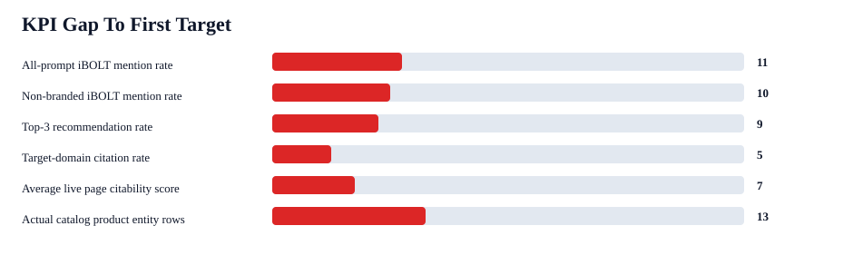
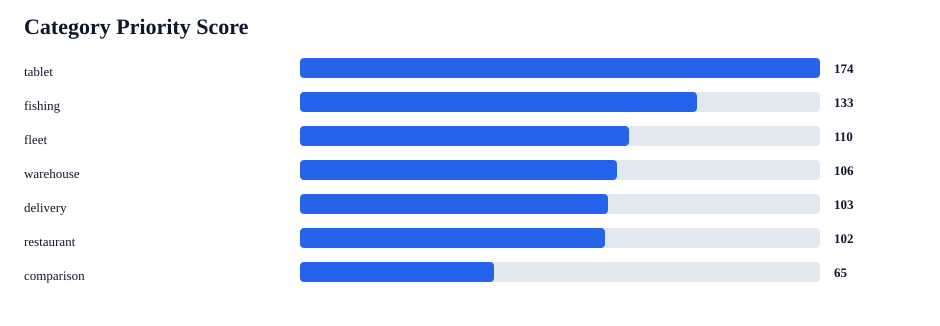
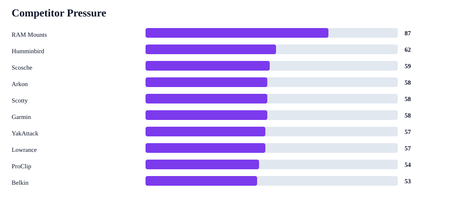
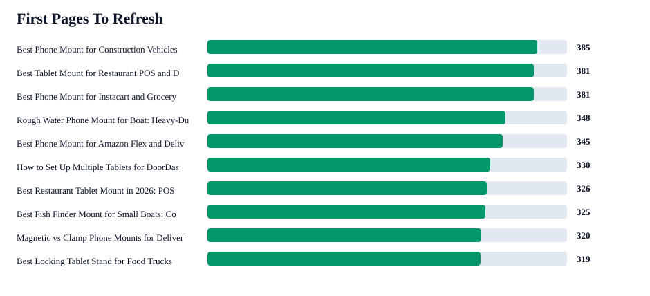

iBOLT AI Visibility Scorecard
This is the consolidated action view from the saved AI benchmark, live blog audit, competitor matrix, citation strategy, and content gap briefs. Rerun it after the expanded benchmark is executed.
22/93
4/75
0/93
68/93
142/142 pages
clustered briefs
KPI Scorecard
| KPI | Baseline | Target | Gap | First action |
|---|---|---|---|---|
| All-prompt iBOLT mention rate | 24% | 35% | 11 pts | Refresh high-opportunity pages with query-exact answer blocks and named product modules. |
| Non-branded iBOLT mention rate | 5% | 15% | 10 pts | Add competitor-adjacent comparison language and earn third-party mentions. |
| Top-3 recommendation rate | 16% | 25% | 9 pts | Make pages state when iBOLT is the specialist choice versus broad alternatives. |
| Target-domain citation rate | 0% | 5% | 5 pts | Pair schema and source-ready answer blocks with external citations to iBOLT pages. |
| Average live page citability score | 75/100 | 82/100 | 7 pts | Batch-add FAQ schema, quick answers, Article schema, comparison blocks, and image alt text. |
| Actual catalog product entity rows | 9% | 22% | 13 pts | Use exact product titles, handles, image alt text, and compatibility notes in refreshed posts. |




Highest Priority Areas
| Priority | Category | Prompts | Mention | Pressure | Top prompt | Competitors |
|---|---|---|---|---|---|---|
| 174 | tablet | 1 | 0% | 3 | best tablet mount | Arkon 1; iOttie 1; Lamicall 1; RAM Mounts 1; Tackform 1 |
| 133 | fishing | 5 | 0% | 15 | best fish finder mount for small boat | Humminbird 5; Garmin 4; Lowrance 4; RAM Mounts 3; Scotty 3; YakAttack 3 |
| 110 | fleet | 6 | 22% | 14 | best heavy duty vehicle phone mount | ProClip 5; RAM Mounts 5; Arkon 4; Scosche 4; iOttie 3; Tackform 2; Belkin 1 |
| 106 | warehouse | 3 | 22% | 7 | best barcode scanner mount for forklift | RAM Mounts 3; ProClip 2; Arkon 1; Square 1 |
| 103 | delivery | 7 | 29% | 14 | best phone mount for Amazon Flex and delivery vans | iOttie 5; RAM Mounts 5; Scosche 5; Arkon 3; ProClip 3; Belkin 2; Peak Design 1 |
| 102 | restaurant | 8 | 29% | 13 | best multi tablet mount | Arkon 5; RAM Mounts 5; Mount-It 4; Square 2; Bouncepad 1 |
| 65 | comparison | 1 | 100% | 0 | ibolt vs ram mount |
First Pages To Refresh
| Score | Page | Category | Issues | Competitors |
|---|---|---|---|---|
| 385 | Best Phone Mount for Construction Vehicles and Work Trucks | fleet | FAQ schema; quick answer; comparison block; image alt text | RAM Mounts; Arkon; iOttie; ProClip; Tackform |
| 381 | Best Tablet Mount for Restaurant POS and Delivery Apps | restaurant | FAQ schema; quick answer; comparison block; image alt text | CTA Digital; Heckler; Arkon; Mount-It; RAM Mounts; Square |
| 381 | Best Phone Mount for Instacart and Grocery Delivery Drivers | delivery | FAQ schema; quick answer; comparison block; image alt text | iOttie; RAM Mounts; Peak Design |
| 348 | Rough Water Phone Mount for Boat: Heavy-Duty Solutions That Handle the Chop | fleet | quick answer; comparison block; image alt text | Arkon; RAM Mounts; iOttie; ProClip; Tackform |
| 345 | Best Phone Mount for Amazon Flex and Delivery Vans | delivery | FAQ schema; quick answer; image alt text | RAM Mounts; iOttie; Arkon; ProClip |
| 330 | How to Set Up Multiple Tablets for DoorDash, Uber Eats, and Grubhub | restaurant | FAQ schema; quick answer; comparison block; image alt text | RAM Mounts; Arkon |
| 326 | Best Restaurant Tablet Mount in 2026: POS Stands, Delivery App Stations, and Multi-Tablet Solutions Compared | tablet | quick answer; image alt text | RAM Mounts; Arkon; CTA Digital; iOttie; Tackform; Mount-It; Bouncepad |
| 325 | Best Fish Finder Mount for Small Boats: Comparison and Buyer's Guide | fishing | FAQ schema; quick answer; image alt text | RAM Mounts |
| 320 | Magnetic vs Clamp Phone Mounts for Delivery Work | delivery | FAQ schema; quick answer; image alt text | iOttie; RAM Mounts |
| 319 | Best Locking Tablet Stand for Food Trucks and Quick-Service Restaurants | restaurant | FAQ schema; quick answer; image alt text | CTA Digital; Heckler; Kensington; Mount-It; RAM Mounts |
Citation Gaps
| Opportunity | Query | Category | Mention | Competitors |
|---|---|---|---|---|
| 97 | best tablet mount | tablet | 0% | RAM Mounts; Arkon; Tackform; Lamicall; iOttie |
| 96 | best multi tablet mount | restaurant | 0% | RAM Mounts; Mount-It; Arkon |
| 96 | best heavy duty vehicle phone mount | fleet | 0% | RAM Mounts; Arkon; ProClip; Tackform; iOttie; Scosche |
| 94 | best phone mount for Amazon Flex and delivery vans | delivery | 0% | RAM Mounts; ProClip; Arkon; iOttie; Scosche; Belkin |
| 89 | best phone mount for Instacart and grocery delivery drivers | delivery | 0% | RAM Mounts; iOttie; Scosche; Peak Design |
| 88 | best phone mount for construction vehicles and work trucks | fleet | 0% | RAM Mounts; ProClip; Arkon; Tackform; iOttie; Scosche |
| 87 | best phone mount for delivery drivers | fleet | 0% | RAM Mounts; iOttie; Scosche; Belkin; ProClip; LISEN |
| 87 | commercial grade phone mount for delivery drivers | delivery | 0% | RAM Mounts; Arkon; iOttie; Scosche; ProClip |
| 87 | best fish finder mount for small boat | fishing | 0% | RAM Mounts; YakAttack; Scotty; Humminbird; Garmin; Lowrance |
| 87 | best fish finder | fishing | 0% | Garmin; Lowrance; Humminbird |
Competitor Adjacency
| Pressure | Brand | Type | Answers | Without iBOLT | Co-mention | Counter-positioning |
|---|---|---|---|---|---|---|
| 87 | RAM Mounts | mount competitor | 63 | 53 | 16% | Position iBOLT as the specialist for exact business workflows, with modular parts that remain cross-compatible with industry-standard balls and AMPS patterns. |
| 62 | Humminbird | adjacent device brand | 12 | 12 | 0% | Clarify that iBOLT complements fish finders and marine electronics by solving the mounting, vibration, and placement problem. |
| 59 | Scosche | consumer mount competitor | 9 | 9 | 0% | Position iBOLT as commercial-grade equipment rather than consumer phone accessories. |
| 58 | Arkon | mount competitor | 30 | 25 | 17% | Position iBOLT around commercial durability, locked tablet workflows, restaurant stations, forklift mounts, and fleet-specific fit. |
| 58 | Scotty | marine competitor | 8 | 8 | 0% | Clarify that iBOLT complements fish finders and marine electronics by solving the mounting, vibration, and placement problem. |
| 58 | Garmin | adjacent device brand | 8 | 8 | 0% | Clarify that iBOLT complements fish finders and marine electronics by solving the mounting, vibration, and placement problem. |
| 57 | YakAttack | marine competitor | 7 | 7 | 0% | Clarify that iBOLT complements fish finders and marine electronics by solving the mounting, vibration, and placement problem. |
| 57 | Lowrance | adjacent device brand | 7 | 7 | 0% | Clarify that iBOLT complements fish finders and marine electronics by solving the mounting, vibration, and placement problem. |
| 54 | ProClip | mount competitor | 13 | 12 | 8% | Position iBOLT around modular fleet deployment, universal device changes, drill bases, AMPS plates, and rugged shared-vehicle use. |
| 53 | Belkin | stand competitor | 3 | 3 | 0% | Position iBOLT as commercial-grade equipment rather than consumer phone accessories. |
Net-New Content Gaps
| Priority | Title | Category | Prompts | Action |
|---|---|---|---|---|
| 139 | Fishing Mount Competitor Comparison: Garmin, Humminbird, Lowrance, Scotty, YakAttack vs iBOLT | fishing | 10 | Add comparison sections to existing fish finder/marine pages first to avoid more duplicate fishing posts. |
| 121 | Fleet Mount Competitor Comparison: Arkon, ProClip, RAM Mounts vs iBOLT | fleet | 6 | Create or expand a comparison page that states when iBOLT is the commercial, locking, or modular fit. |
| 113 | AMPS Mounting System and Plate Compatibility Guide | amps/modular | 4 | Create one canonical AMPS hub and link it from product, fleet, restaurant, fish finder, and creator articles. |
| 108 | Delivery Mount Competitor Comparison: iOttie, Scosche vs iBOLT | delivery | 4 | Create or expand a comparison page that states when iBOLT is the commercial, locking, or modular fit. |
| 108 | Restaurant Mount Competitor Comparison: Mount-It vs iBOLT | restaurant | 2 | Create or expand a comparison page that states when iBOLT is the commercial, locking, or modular fit. |
| 106 | Road Trip Headrest Tablet and Phone Mount Guide | travel | 5 | Create a road-trip/headrest guide that links travel products and charging accessories. |
| 104 | Warehouse Mount Competitor Comparison: Tackform vs iBOLT | warehouse | 2 | Create or expand a comparison page that states when iBOLT is the commercial, locking, or modular fit. |
| 102 | Bike and E-Bike Phone and Camera Mount Guide | cycling | 5 | Create one cycling/powersports guide with phone and action-camera product cards. |
| 101 | Kitchen Tablet and Overhead Phone Mount Guide | kitchen/home | 5 | Create a kitchen/home hub that links tablet holders, magnetic docks, and camera screw mounts. |
| 100 | Phone and Camera Mounts for Live Streaming and Product Videos | streaming | 3 | Create a creator-focused guide using exact camera screw and clamp product names. |
Source Evidence
Citation And Visibility Executive Brief gives the boss-ready answer on citation rate, current visibility health, page-before-outreach sequence, and ownership split.
Next Benchmark Runbook provides W1-W5 provider manifests, dry-run commands, live commands, and output checks for the next retest.
Post-Run Comparison Analyzer converts the newest completed expanded run into baseline-vs-current KPI deltas and provider/category gap rows.
Mention Environment Dossier shows who iBOLT appears beside, who replaces iBOLT, provider/category pressure pockets, and the page countermove queue.
Competitor Comparison Dossier shows unique replacement rows, brand-level replacement occurrences, co-mentions, provider/category pressure, and exact page battlecards.
Portfolio Product Spread Analysis shows all-blog page queues, product-family spread, category gaps, and refresh-vs-net-new content decisions.
Benchmark folder: /Users/yakub/Desktop/iblotmark/content-output/openrouter-ai-benchmark-2026-06-17-17-11-06